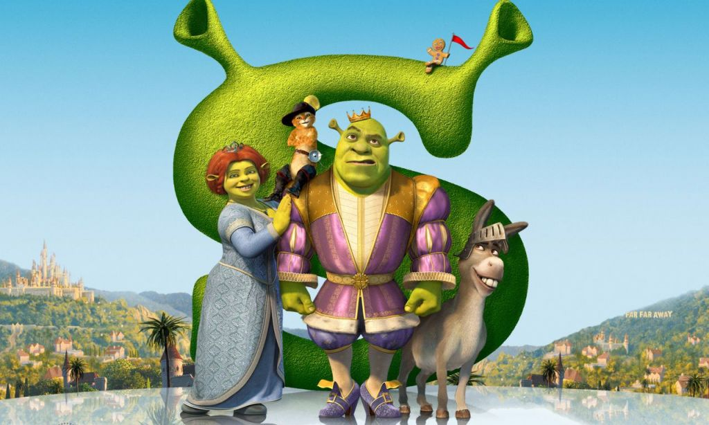

Шрек (2001)
«Шрек» (англ. Shrek) — полнометражный анимационный фильм киностудии Dreamworks Pictures режиссёров Эндрю Адамсона и Вики Дженсон по мотивам детской книги Уильяма Стейга «Шрек!». Всего создано 5 частей «Шрека».
В мультфильме собраны и действуют герои известных и любимых в европейской культуре сказок, традиционные сюжетные линии которых умело и комично вплетены в совершенно иную историю. Комический эффект создаётся не только неожиданным соединением совершенно разных историй в одну — сказочные персонажи сами читали сказки и знают, что в них положено, а что нет. Однако каждую секунду они нарушают зрительские ожидания. Герои мультфильма живут в условном Средневековье, но их речь сочетает с высоким поэтическим стилем.
Жил да был в сказочном государстве большой зеленый великан по имени Шрэк. Жил он в гордом одиночестве в лесу, на болоте, которое считал своим. Но однажды злобный коротышка — лорд Фаркуад, правитель волшебного королевства, безжалостно согнал на Шрэково болото всех сказочных обитателей.
И беспечной жизни зеленого великана пришел конец. Но лорд Фаркуад пообещал вернуть Шрэку болото, если великан добудет ему прекрасную принцессу Фиону, которая томится в неприступной башне, охраняемой огнедышащим драконом.
СМОТРЕТЬ ТРЕЙЛЕР СМОТРЕТЬ МУЛЬТФИЛЬМ